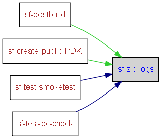

|
Helium API | ||||||
| prev next | frames no frames | ||||||
Location
d:\maintools\sf-config\common\build.postbuild.xml:601:
Conditional execution
No conditions on target execution.
package all logs into zipfile for publishing
| Name | Edit status |
|---|---|
| User editable properties | |
| build.drive | recommended |
| Internal properties | |
| build.output.dir | never |

<target name="sf-zip-logs">
<if>
<istrue value="${sf.spec.logs.zip.enable}"/>
<then>
<mkdir dir="${build.output.dir}/zips/release"/> <!-- workaround for when there's no other releaseables, just the logs -->
<zip destfile="${build.output.dir}/zips/release/build_logs.zip" basedir="${build.drive}">
<include name="output/logs/**"/>
<exclude name="output/logs/BOM/**"/>
<exclude name="output/logs/deliverables/**"/>
<exclude name="output/logs/releaseables/**"/>
</zip>
<!-- workaround for the time when when 'sf-run-analysis-raptor' has not been run -->
<mkdir dir="${build.drive}/output/logs/releaseables"/>
<zip destfile="${build.output.dir}/zips/release/build_BOM.zip">
<zipfileset dir="${build.drive}/output/logs/BOM" prefix="build_info/logs/BOM"/>
<zipfileset dir="${build.drive}/output/logs/releaseables" prefix="build_info/logs/releaseables"/>
</zip>
</then>
</if>
</target>
|
Helium API | ||||||
| prev next | frames no frames | ||||||